An abscess is a localised collection of pus in a cavity formed by tissue breakdown, walled off by the body's defences. Abscesses are one of the most common surgical problems in cattle — they appear after wounds, thorn pricks, bites, dirty injections or contaminated surgical sites, and they can occur almost anywhere on the body.
A mature abscess will not resolve with medicine alone: the pus is trapped inside a fibrous capsule that antibiotics cannot penetrate well. The treatment is surgical drainage — a simple, effective procedure when done correctly. This guide covers the causes, diagnosis, lancing and drainage technique, flushing, aftercare and prevention, for veterinary students, veterinarians, farmers and breeders.
Important: All surgical procedures must be performed by a qualified veterinarian under proper anaesthesia and aseptic conditions. Never lance an abscess yourself — a cut in the wrong place can damage blood vessels, nerves or joints, and spread infection into the bloodstream.
What Is an Abscess? Causes and Common Sites
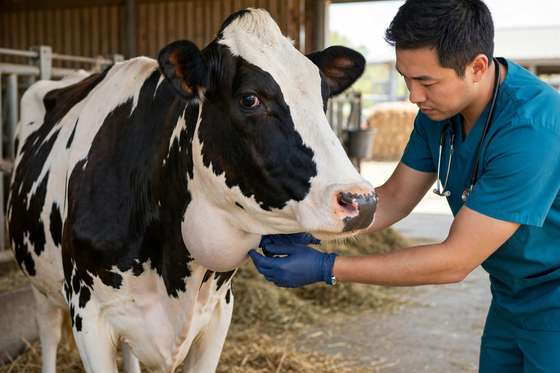
A swelling on the neck — the most common site for abscesses
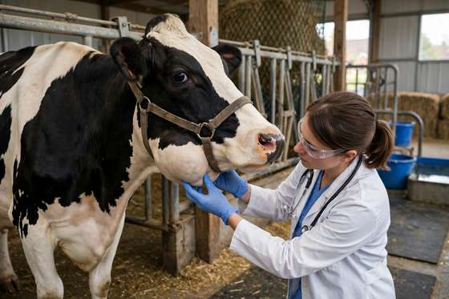
Jaw swelling — lumpy jaw must be ruled out before lancing
An abscess forms when bacteria enter the tissue and the body walls off the infection. White blood cells rush to the site, bacteria and dead tissue collect as pus, and a fibrous capsule forms around the cavity. The most common bacteria involved are Trueperella pyogenes, Staphylococcus species and Streptococcus species.
1
Wounds and thorn pricks(Puncture wounds from thorns, barbed wire or sharp objects drive bacteria deep into tissue)
2
Dirty injections(Reused or unsterile needles and injections through dirty skin are a very common cause of neck abscesses)
3
Bites and kicks(Bite wounds and injuries from other animals introduce bacteria under the skin)
4
Contaminated surgical wounds(Any surgical site can become infected if aseptic technique or aftercare fails)
5
Foot injuries(Punctures of the sole and interdigital infections cause painful foot abscesses and sudden lameness)
6
Udder and teat injuries(Wounds to the udder can form deep abscesses that affect milk production)
Common sites: neck (injection-site abscesses), jaw, shoulder, brisket, udder, foot and poll. A special case is lumpy jaw — a chronic infection of the jaw bone caused by Actinomyces bovis — which produces a hard, bony, immovable swelling that does not fluctuate and must not be treated as a simple abscess.
Diagnosis — Is It Ready to Drain?
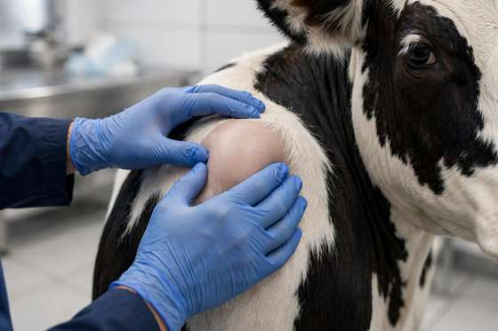
Palpation — a mature abscess feels warm, soft and fluctuant
Diagnosis is mainly by careful palpation, but the veterinarian must first be sure the swelling is an abscess and that it is mature enough to drain.
Clinical signs: a warm, painful, rounded swelling that grows over days; the animal may have mild fever and reduced appetite. A mature abscess feels soft and fluctuant — fluid can be felt moving inside when the swelling is pressed on two sides. The hair over the centre may fall out and the skin may thin.
Needle aspiration test: a sterile needle is inserted into the centre of the swelling; if pus is drawn out, the diagnosis is confirmed and the abscess is ready to lance. This test also protects against lancing a haematoma (blood clot), a hernia or a tumour by mistake.
Differential diagnosis: a hard, hot, painful swelling that has just appeared is cellulitis, not a mature abscess — it needs medicine, not a knife. Haematomas, hernias, tumours and cysts can all look like abscesses and must be ruled out first.
Preparation — Restraint, Anaesthesia and Instruments
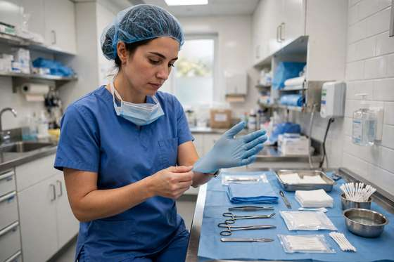
Preparation — sterile gloves and a clean, organised instrument table
Good preparation makes drainage quick, safe and clean. The animal is restrained in a crush; nervous animals may need sedation as prescribed by the veterinarian. Local anaesthesia is infiltrated around the abscess so the animal feels no pain during lancing.
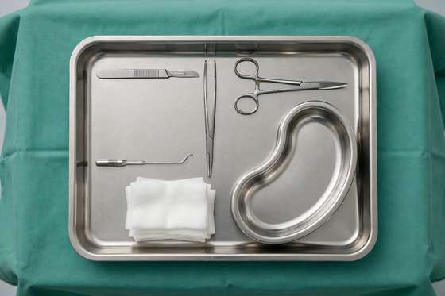
The drainage kit — scalpel, forceps, probe, gauze and kidney tray
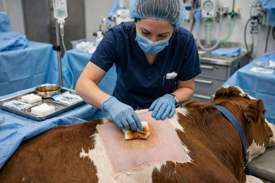
Clip the hair and scrub with antiseptic before any incision
Instruments needed: scalpel with a sterile blade, artery forceps, dressing forceps, a blunt probe, sterile gauze, a kidney tray, antiseptic solution (povidone-iodine or chlorhexidine) and a syringe for flushing. The site is clipped free of hair and scrubbed with antiseptic solution before the incision is made.
Lancing and Drainage — Step by Step
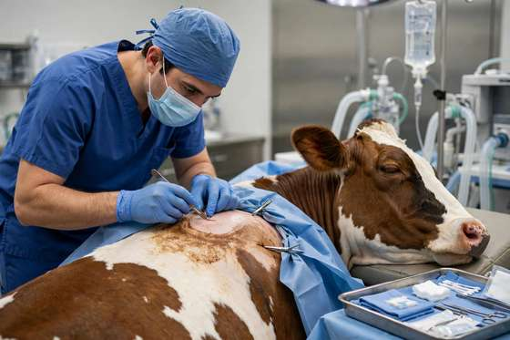
Lancing — a small incision at the lowest point of the abscess
1
Confirm pus by aspiration(A sterile needle draw confirms the abscess is mature and ready before any cut is made)
2
Restrain and anaesthetise(Secure the animal in a crush; infiltrate local anaesthetic around the site)
3
Clip and disinfect the site(Clip the hair and scrub the skin with antiseptic solution)
4
Lance at the lowest point(Make a bold incision at the most dependent point so pus drains out by gravity; a small stab incision closes too early)
5
Let the pus drain fully(Allow the cavity to empty completely; gently break down any internal pockets with a gloved finger or blunt probe)
6
Flush the cavity(Irrigate with dilute antiseptic solution until the fluid runs clear — never use a strong, irritating solution inside the cavity)
7
Leave the wound open(Do not stitch the cavity closed — it must heal from the bottom up; a drain or gauze pack may keep it open for the first days)
8
Apply a light dressing(Cover with clean gauze and bandage where possible; protect the wound from flies and dirt)
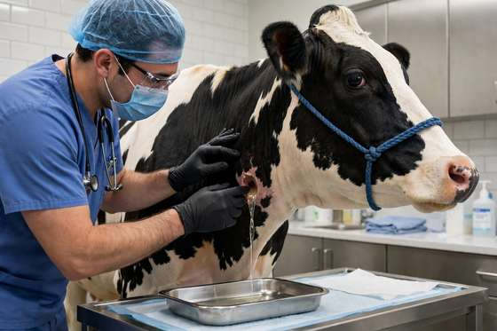
Drainage — let the cavity empty completely into a sterile tray
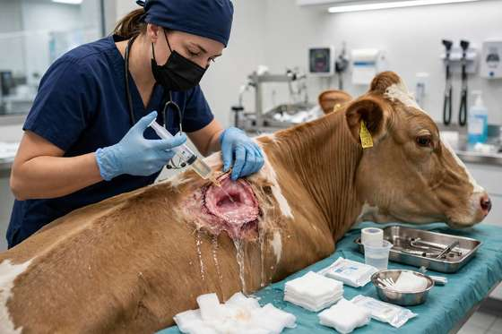
Flushing — irrigate until the fluid runs clear
Field tip: collect the pus in a tray and dispose of it safely — do not let it spill onto bedding or the yard, where it can infect other animals. Wash hands, instruments and the area thoroughly afterwards.
Drainage Procedure — Step-by-Step Flowchart
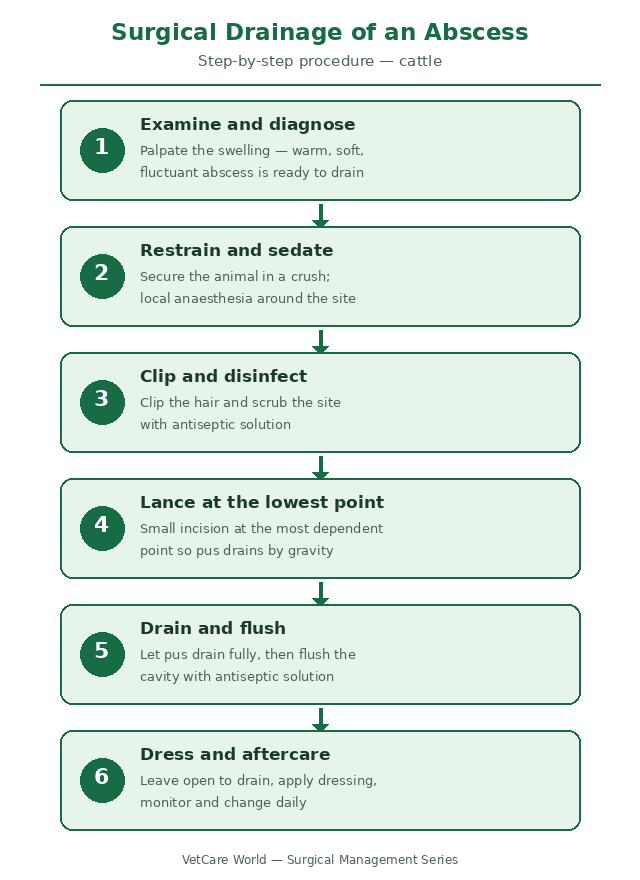
The six steps of abscess drainage — examine, restrain, prepare, lance, drain, dress
Follow the steps in order every time. Skipping preparation or closing the wound too early are the two most common reasons an abscess comes back.
Aftercare, Complications and Prevention
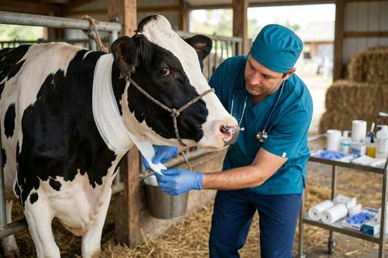
Aftercare — a clean dressing, changed as the veterinarian advises
Aftercare
Daily flushing: the cavity is flushed with antiseptic solution as advised by the veterinarian until it fills with healthy granulation tissue.
Keep the wound open: the opening must stay open for drainage — if the skin seals over too early, pus collects again and the abscess returns.
Fly control: protect the wound from flies, which spread infection and can cause maggot infestation.
Antibiotics and pain relief: given as prescribed by the veterinarian — especially for deep abscesses, animals with fever, or abscesses near joints.
Monitor: watch for fever, loss of appetite, spreading swelling or the abscess refilling — any of these needs a veterinary re-check.
Complications
Recurrence: the commonest problem — caused by incomplete drainage, closing the wound too early, or a foreign body (such as a thorn) left inside.
Sinus formation: a persistent draining tract, usually because a foreign body or dead tissue remains in the cavity.
Spread of infection: infection can spread to nearby joints, tendons or the bloodstream (septicaemia) if treatment is delayed or incomplete.
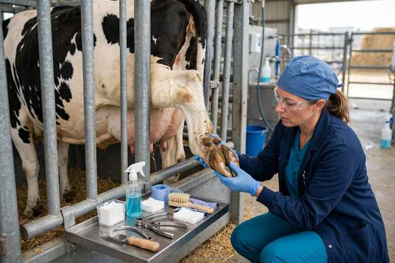
Foot abscess — a common cause of sudden, severe lameness
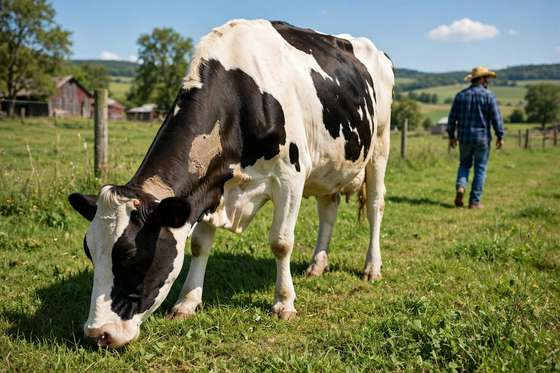
Full recovery — a well-drained abscess heals in two to three weeks
Prevention
Most abscesses are preventable. Use a clean, sterile needle for every injection and inject through clean skin. Treat wounds promptly — clean them and apply antiseptic. Remove thorns, sharp wire and rubbish from yards and pastures. Keep surgical and calving areas clean, and isolate animals with draining abscesses so pus does not contaminate shared bedding and feed areas. Good hygiene is cheaper than any treatment.
⚠ Important Tips:
Never lance a swelling that is hard, very hot and painful — it may be cellulitis, not a mature abscess.
Always lance at the lowest point so pus drains by gravity.
Never stitch an abscess cavity closed — it must heal from the bottom up.
Dispose of pus safely and disinfect instruments after every case.
If the swelling returns after drainage, the vet should check for a foreign body inside.
Frequently Asked Questions
What causes abscesses in cattle?
Abscesses are caused by bacteria — most commonly Trueperella pyogenes, Staphylococcus and Streptococcus species — entering tissue through a wound, thorn, bite, dirty injection needle or contaminated surgical site. The body's defence walls off the infection with a capsule, and pus collects inside. Poor hygiene, dirty needles and untreated wounds are the main risk factors.
When is an abscess ready to lance?
An abscess is ready to lance when it is mature — soft, warm and fluctuant, meaning fluid can be felt moving inside when the swelling is pressed on two sides. A hard, hot, painful swelling that has just appeared is still a cellulitis and is not ready; lancing too early spreads infection. A needle aspiration test confirms pus before the incision is made.
Why must an abscess be lanced at its lowest point?
The incision is made at the most dependent (lowest) point of the abscess so that pus drains out by gravity. An incision at the top leaves a pool of pus at the bottom of the cavity, which delays healing and often causes the abscess to refill. Good drainage is the most important part of abscess treatment.
Should an abscess wound be stitched closed after drainage?
No. After drainage, the abscess cavity is left open to heal by second intention — it fills with granulation tissue from the bottom up. Stitching an infected cavity closed traps pus inside and the abscess almost always returns. A drain or a packing of gauze may be placed to keep the opening draining for the first few days.
What is lumpy jaw and how is it different from a simple abscess?
Lumpy jaw is a chronic infection of the jaw bone caused by Actinomyces bovis. Unlike a soft-tissue abscess, it involves the bone itself, producing a hard, bony, immovable swelling of the lower jaw that does not fluctuate. It needs long veterinary treatment and has a guarded prognosis, whereas a simple soft-tissue abscess usually heals well after drainage.
My cow has a big soft swelling on her neck — can I open it myself?
No — do not open it yourself. A swelling on the neck may be near important blood vessels, nerves or the oesophagus, and a dirty cut can spread infection into the blood. Only a veterinarian can confirm it is an abscess, choose the right place to lance it, and drain it safely with clean instruments and local anaesthesia.
How do I care for the wound after the vet drains the abscess?
Keep the wound clean and open so it keeps draining — do not cover it with mud, dung or dirty cloth. Flush it daily with the antiseptic solution the vet advises, change the dressing as instructed, and keep flies away from the wound. Watch for fever, loss of appetite or the swelling coming back, and call the vet if any of these appear.
گائے میں پھوڑا (Abscess) ہو جائے تو اس کا علاج کیسے کریں؟
گائے میں پھوڑا بیکٹیریا کی وجہ سے بنتا ہے۔ جب پھوڑا نرم اور پکا ہوا ہو تو جانوروں کا ڈاکٹر اسے صاف اوزاروں سے نیچے کی طرف سے چیر کر پیپ نکال دیتا ہے، پھر زخم کو جراثیم کش دوا سے دھوتا ہے۔ زخم کو کھلا رکھا جاتا ہے تاکہ وہ اندر سے بھرے۔ خود پھوڑا چیرنے کی کوشش نہ کریں — یہ خطرناک ہو سکتا ہے۔
Key Takeaway
An abscess is a common but very treatable problem in cattle. The treatment is simple: confirm pus by aspiration, lance at the lowest point, drain fully, flush the cavity and leave the wound open to heal from the bottom up. Antibiotics alone cannot cure a mature abscess, and closing the wound too early brings it back. Prevention — clean needles, prompt wound care and good hygiene — stops most abscesses before they start. Follow current local veterinary authority guidance.